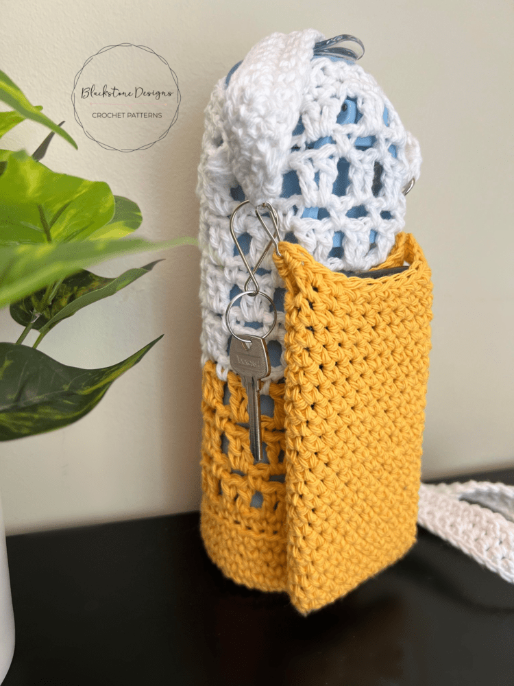

Water Bottle Holder
Materials:
Worsted weight yarn in your preferred color
Crochet hook sized appropriately for your yarn (check yarn label for recommendation)
Yarn needle (for weaving in ends)
Scissors
Size:
This pattern is adjustable based on your water bottle size. Measure the circumference of your water bottle to determine the starting chain length for the base.
Stitches:
Single crochet (sc)
Increase (inc) - We'll use single crochet increase for this pattern (see
instructions below)
Chain (ch)
Slip stitch (sl st)
Single Crochet Increase (inc):
Insert your hook under both loops of the indicated stitch.
Yarn over, and pull up a loop.
Yarn over, and pull through two loops.
Insert your hook under both loops of the same stitch again.
Repeat steps 2 and 3 to complete the second single crochet in the same stitch.
Pattern:
Base:
Make a magic ring or chain 4, slip stitch to join (creates a starting circle).
Round 1: sc 6 into the ring/circle, sl st to join (6 sc).
Round 2: sc 2 in each sc around, sl st to join (12 sc).
Round 3: sc in the next sc, sc 2 in the next sc repeat around, sl st to join (18 sc).
Continue increasing rounds following the same pattern (sc in one, sc2 in the next) until the base measures slightly larger than the circumference of your water bottle. You can adjust the number of increase rounds based on your bottle size.
Once you reach the desired base size, crochet one round without increasing (sc in each stitch around).
Body:
Continue crocheting in rounds without increasing. You can switch to a different stitch here if you'd like a textured look (e.g., half double crochet).
The height of the body will depend on your preference. A good rule of thumb is to make it slightly taller than your water bottle.
Strap:
Chain a long strand of stitches to create the desired strap length. For a shoulder strap, you'll want it to be quite long.
Optional: To reinforce the strap, crochet single crochets along the length of the chain, turning at the end of each row and crocheting back up the chain.
Finishing:
Fasten off and weave in all ends with your yarn needle.
Attach the strap to the body of the holder. You can do this by sewing it on securely or crocheting it directly onto the body.
Tips:
You can customize this pattern by using different colors of yarn, adding stripes or other designs.
For a more fitted look, you can add a row or two of single crochets around the top rim of the holder after completing the body.
Consider adding a button closure or drawstring at the top to secure the bottle.
Additional Resources:
There are many resources available online for crochet water bottle holder patterns. Here are a couple to explore for more inspiration or variations:
Free Crochet Water Bottle Holder Pattern: https://sarahmaker.com/crochet-water-bottle-holder/
How to Crochet WATER Bottle Holder: YouTube: https://m.youtube.com/watch?v=PG6cdFK38pA
With a little practice, you'll have a stylish and functional crochet water bottle holder in no time!